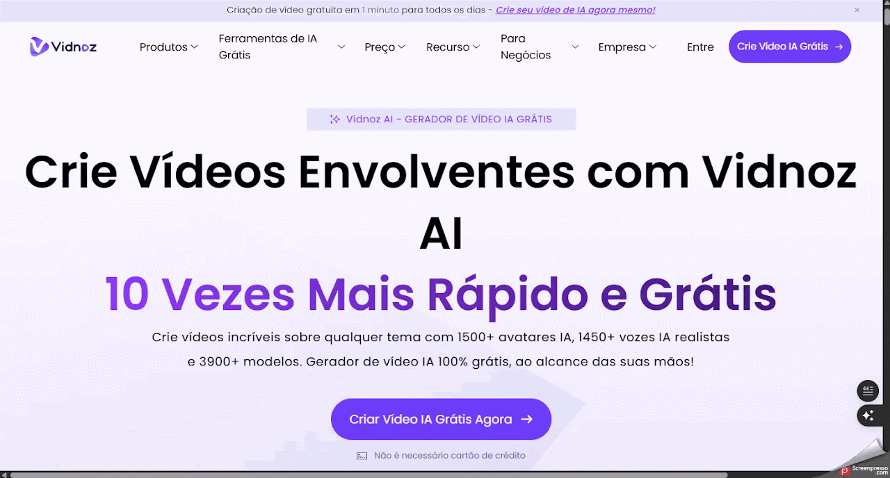

Vidnoz AI
Auxiliar o professor na criação de vídeos educativos personalizados com avatares e narração automatizada, facilitando a apresentação de conteúdos de forma dinâmica.
Ficha técnica
Visão geral
O que é o Vidnoz AI ?
O Vidnoz AI é um gerador de vídeos baseado em inteligência artificial.
Fluxo de uso
Como utilizar o Vidnoz AI
Etapa 1
Acessando o Vidnoz AI
- Acesse o site oficial: https://pt.vidnoz.com/.
- Crie uma conta gratuita:
- Clique em "Criar Vídeo IA Grátis" e registre-se usando seu e-mail ou conta do Google.
- Faça login:
- Após o cadastro, entre na plataforma com suas credenciais para acessar todos os recursos disponíveis.

Etapa 2
Criando um Vídeo com IA
- Escolha um Modelo e um Avatar:
- Selecione um dos modelos disponíveis ou comece do zero.
- Escolha um avatar de IA que melhor represente o estilo do seu vídeo.
- Insira o Texto e Escolha a Voz:
- Digite o roteiro que o avatar irá narrar.
- Escolha uma voz de IA adequada ao seu público-alvo, considerando idioma, gênero e entonação.
- Personalize o Vídeo:
- Adicione elementos como imagens, vídeos, músicas de fundo, legendas e efeitos de transição.
- Ajuste o layout e a duração conforme necessário.
- Gere e Baixe o Vídeo:
- Clique em "Gerar" e aguarde a criação do vídeo.
- Após a geração, você pode visualizar, baixar ou compartilhar o vídeo diretamente nas redes sociais ou por e-mail.

Etapa 3
Recursos Adicionais
- Transformar Texto em Vídeo: Converta artigos, blogs ou qualquer texto em vídeos envolventes.
- Transformar Imagem em Vídeo: Crie vídeos a partir de fotos, ideal para apresentações ou homenagens.
- Avatar Falante: Faça uma foto "falar" com sincronização labial realista.
- Clonagem de Voz: Clone sua própria voz para personalizar ainda mais seus vídeos.
- Tradução de Vídeo com IA: Traduza vídeos para mais de 140 idiomas com dublagem sincronizada.
Boas práticas
Dicas adicionais
- Educação: Crie vídeos didáticos para aulas online.
- Comunicação Interna: Compartilhe mensagens corporativas de maneira eficaz.
- Redes Sociais: Produza conteúdos atrativos para plataformas como Instagram, TikTok e YouTube.